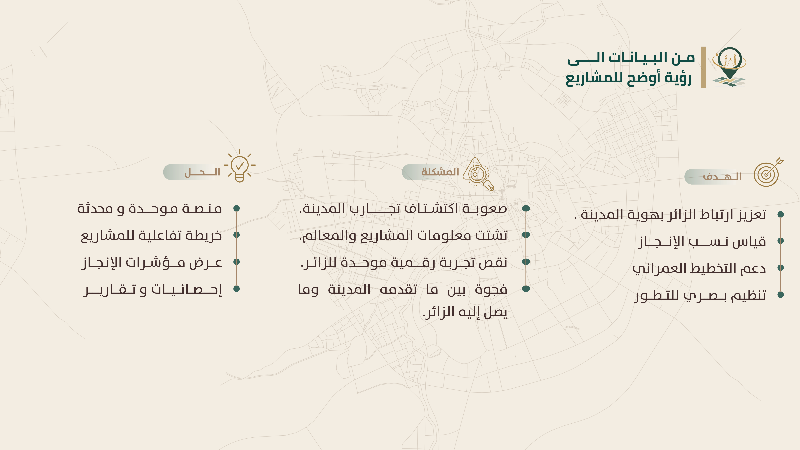

المشاركة في برمجان المدينة المنورة ضمن مسار إثراء تجربة الزائر، والترشح للمراحل النهائية.
نــدى محــــمد
ملــــــف أعمـــــــــــالـــي.
أَمشي بروحٍ حالمٍ متَوَهِّجٍ
في ظُلمةِ الآلامِ والأَدواءِ
النُّور في قلبي وبينَ جوانحي
فَعَلامَ أخشى السَّيرَ في الظلماءِ؟
02
نبذة عني
متخصصة في نظم المعلومات أركز على تحليل الأعمال والنظم وتجربة المستخدم UX، بخلفية تجمع بين الجوانب التقنية والإدارية، تنوعت مشاريعي بين تحليل وتصميم الأنظمة، وتحسين تجربة المستخدم، وتحليل البيانات ودعم القرار، مع خبرة في قيادة فرق المشاريع والعمل عبر مراحل تطوير الأنظمة، ومهارات في التواصل والتنسيق والتكيف السريع مع الأدوات والتحديات الجديدة.
أدرس النظم من الداخل: كيف تظهر المعلومة بأفضل صورة، وأين تكمن الصعوبات، وكيف تصبح التجربة واضحة لشخص يستخدمها.
التعليم
نظم المعلومات الإدارية
جامعة طيبة
أين أعمل تحديداً
أغسطس 2025 — سبتمبر 2026
خبرة تطوعية
مصممة وكاتبة محتوى في عدة أندية سابقة، أبرزها
(نادي رواد الصناعة، نادي الابتكار والريادة، نادي رؤية، نادي كلية إدارة الأعمال)
يونيو 2026 — أغسطس 2026
خبرة تدريبية
جمعية إنماء الأسرية — تدريب تعاوني كمحللة نظم
قريبًا
خبرة وظيفية
[ ستُضاف عند توفرها ]
لحظات وفعاليات وأنشطة شاركت فيها.
المركز الثالث لمشاريع التخرج في تخصص نظم المعلومات الإدارية بجامعة طيبة، عن مشروع "نورين".
الاحتفال ضمن الخريجات المتميزات الحاصلات على مرتبة الشرف الأولى في تخصص نظم المعلومات الإدارية بجامعة طيبة.


مدار
منصة ذكية تربط الزائر بالمدينة المنورة وتحوّل اكتشاف أماكنها وتجاربها إلى رحلة سهلة وتفاعلية عن طريق خارطة تفاعلية، قصص المكان، مسارات مقترحة ومتناسبة للزائر، ومرشد محلي يجعل الرحلة الاستكشافية أكثر إمتاعًا.
استكشف المشروع ↗نورين
نورين منصة تعليمية استثمارية ذكية تربط المستفيدين بالفرصة المناسبة عبر تكامل الجهات الاستثمارية والمكاتب الاستشارية، لتبسيط رحلة القبول والدراسة من البداية حتى تحقيق المسار الأكاديمي والمهني المرغوب.
استكشف المشروع ↗رافد
حالة دراسية تهدف إلى إعادة تصميم تجربة المستخدم لنظام رافد من خلال تحليل سير العمل الحالي، وتحديد المشكلات التشغيلية، ثم تحويل نتائج التحليل إلى حلول تصميمية تعتمد على مبادئ UX لتحسين وضوح العمليات وسهولة استخدامها.
استكشف المشروع ↗لنتواصل.
الملف قيد التطوير...
من فضلك تحلّى بالصبر! 🙂